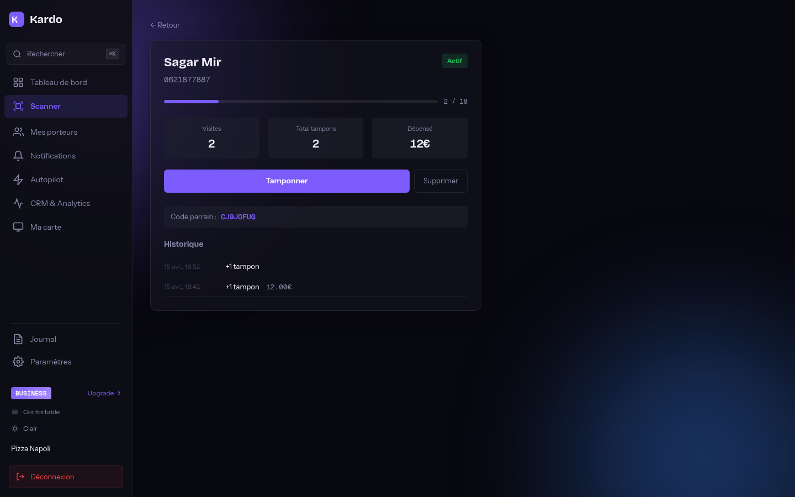
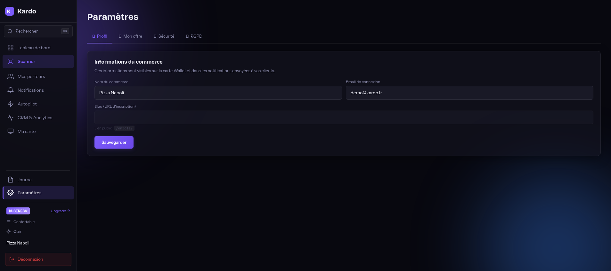
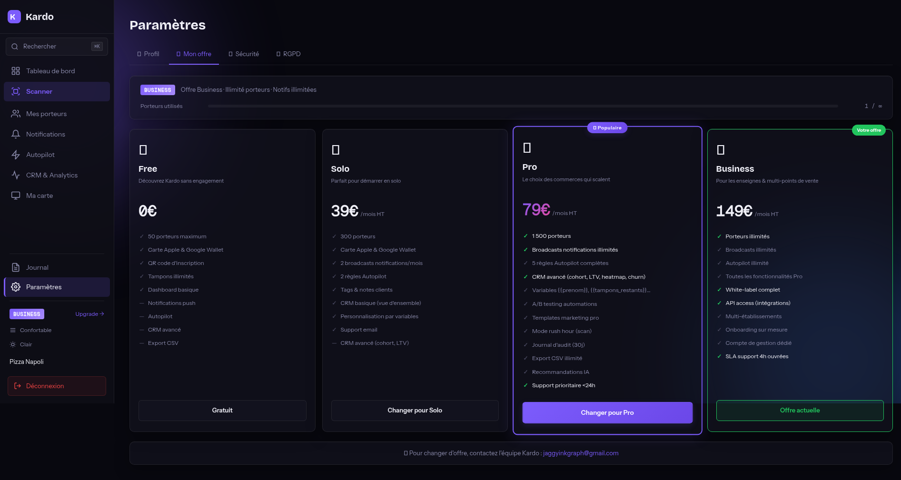
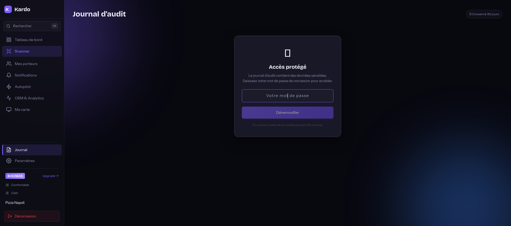

Documentation projet — Portfolio
Kardo
Plateforme SaaS B2B de cartes de fidélité numériques — Apple Wallet & Google Wallet
Sommaire
- 1. Contexte et présentation
- 2. Problématique et solution
- 3. Architecture technique
- 4. Stack technologique
- 5. Base de données
- 6. Fonctionnalités du dashboard
- 7. Captures d'écran de l'application
- 8. Intégration Apple Wallet & Google Wallet
- 9. Autopilot Marketing — différenciateur clé
- 10. CRM & Analytics
- 11. App mobile Flutter (iOS + Android)
- 12. API REST — 65+ endpoints
- 13. Sécurité & tests
- 14. Conformité RGPD / CNIL
- 15. Plans tarifaires & gating
- 16. Déploiement production (Railway)
- 17. Défis techniques rencontrés
- 18. Bilan & roadmap
1. Contexte et présentation
Kardo est une plateforme SaaS B2B permettant à des commerçants (restaurants, boulangeries, salons de coiffure, boutiques) de proposer un programme de fidélité 100 % dématérialisé à leurs clients. Les cartes de fidélité sont intégrées directement dans Apple Wallet et Google Wallet, sans aucune application à télécharger pour le client final.
Le projet a été conçu, développé et déployé en production de bout en bout, depuis l'analyse fonctionnelle jusqu'à la mise en ligne sur Railway, en passant par l'intégration Apple Developer (Pass Type ID, certificats .p12) et Google Cloud (Wallet API, service account JWT).
Vue d'ensemble fonctionnelle
- Côté commerçant (B2B) : dashboard web complet (Vue 3 SPA) + app mobile Flutter, gestion des cartes, scanner QR intégré, autopilot marketing, CRM avancé avec cohort retention, journal d'audit, paliers de récompenses configurables.
- Côté client final (B2C) : inscription en moins de 10 secondes via QR code, ajout de la carte au Wallet natif (Apple ou Google), notifications push automatiques, code parrain unique, pas d'app à installer.
- Système de plans : Free / Solo (19€) / Pro (39€) / Business (79€) avec gating fin sur les features (broadcasts, automations, analytics avancées, journal d'audit).
Public cible
- Commerçants indépendants : restaurants, boulangeries, salons, cafés, food trucks — qui veulent fidéliser sans tampon papier ni application dédiée.
- Petites chaînes : 2 à 5 points de vente, qui ont besoin de stats centralisées et d'envoyer des broadcasts à toute leur base.
- Clients finaux : particuliers équipés d'iPhone ou Android, sans appétence pour télécharger une nouvelle app par commerce fréquenté.
2. Problématique et solution
La problématique du marché
Les programmes de fidélité traditionnels souffrent de trois défauts majeurs :
- Cartes papier : perdues, oubliées, lavées en machine — et surtout aucune donnée exploitable côté commerçant pour relancer les clients inactifs.
- Applications dédiées : chaque commerce demande au client de télécharger SON appli — friction massive, taux d'adoption très faible, désinstallation rapide.
- Manque d'analytics : les solutions existantes (Antepay, Fidel, Stamp Me) offrent peu d'analytics avancées et aucune automatisation marketing.
La solution Kardo
- Zéro friction client : le client scanne un QR code, remplit 4 champs (prénom, nom, téléphone, date de naissance), et sa carte apparaît directement dans Apple Wallet ou Google Wallet en 10 secondes chrono.
- Push natif : les notifications passent par les canaux natifs Apple (APNs) et Google (FCM v1), pas besoin d'autorisations spécifiques.
- Autopilot intégré : 9 automations marketing (proche récompense, win-back, bienvenue, anniversaire, milestone, parrainage, etc.) tournent en tâche de fond, paramétrables par le commerçant.
- Analytics business : rétention par cohorte, LTV, heatmap horaires, performance des campagnes 48h post-broadcast — réservés aux plans Pro+.
Différenciation concurrentielle
| Feature | Kardo | Antepay / Fidel / Stamp Me |
|---|---|---|
| Autopilot Marketing | 9 automations natives | Manuel uniquement ou très limité |
| Paliers multi-niveaux | Personnalisables, illimités | Récompense unique |
| Système de parrainage | Intégré, bonus tampons | Absent ou payant en option |
| Analytics avancées | Cohort retention, LTV, heatmap | Basique |
| Wallet natif | Apple Wallet + Google Wallet | App propriétaire à télécharger |
| Tarif d'entrée | Free puis 19€/mois | 30 à 50€/mois minimum |
3. Architecture technique
Architecture monorepo en 3 services
Le projet est organisé en monorepo avec deux applications distinctes plus une documentation centralisée :
kardo/
├── kardo-app/ ← Laravel 13 backend + Vue 3 SPA (single app)
│ ├── app/ Controllers, Models, Services, Jobs, Commands
│ ├── resources/js/ Vue 3 SPA (13 vues, 4 stores Pinia, 3 composables)
│ ├── resources/views/ Blade : landing, enrollment, card client, légal
│ ├── routes/api.php 65+ routes API REST
│ ├── config/kardo.php Plans, limites, config wallet
│ ├── database/migrations/ 17 migrations PostgreSQL
│ ├── node-services/ passGenerator.cjs (Apple .pkpass)
│ ├── Dockerfile PHP 8.4 + GD + Node + PostgreSQL
│ └── tests/ 28 tests Feature PHPUnit
├── kardo-pro/ ← App Flutter mobile (iOS + Android pour commerçants)
└── docs/ AVANCEMENT.md, CAHIER_DES_CHARGES.md, GUIDE-ADMIN.mdArchitecture trois-tiers décentralisée
L'application suit une architecture SPA + API REST + Wallets externes avec séparation stricte des responsabilités :
SSR public
Dashboard B2B
iOS + Android
65+ routes, 11 controllers
10 tables, 17 migrations
HTTP/2, .pkpass
OAuth2 service account
Emails transactionnels
- Frontend dashboard : Vue 3 single-page servie depuis Laravel, communique exclusivement par HTTP avec l'API. Pinia pour la gestion d'état (auth, cards, notifications, crm, automations).
- Backend API : Laravel 13 stateless authentifiant via Sanctum bearer tokens (24h expiration). Multi-tenancy stricte avec ownership check sur chaque route.
- Génération .pkpass : microservice Node.js (passkit-generator) appelé en CLI depuis Laravel pour signer les passes Apple avec le certificat .p12.
- Push iOS : APNs HTTP/2 avec certificat pass signing (corps vide = trigger refresh du pass).
- Push Android : FCM v1 avec OAuth2 service account, token caché en cache pour éviter les rate limits.
- Queue + Scheduler : queue:work + schedule:run lancés en background processes dans le même container Docker.
4. Stack technologique
| Couche | Technologie | Version / Détails |
|---|---|---|
| Backend API | Laravel | 13.x sur PHP 8.4 |
| Base de données | PostgreSQL | 16.x (Railway managed) |
| Frontend SPA | Vue.js | 3.x avec Composition API |
| State management | Pinia | 4 stores (auth, cards, notifications, crm) |
| Bundler | Vite | Build ~1.3s |
| Styling | Tailwind CSS | 4.x avec design system custom (variables CSS --s-*) |
| App mobile | Flutter | 3.x — iOS + Android |
| Authentification | Laravel Sanctum | Bearer tokens, 24h expiration |
| Emails | Resend | API REST, templates Blade |
| Push iOS | Apple APNs | HTTP/2 + certificat .p12 |
| Push Android | Firebase FCM v1 | OAuth2 service account |
| Wallet iOS | Apple PassKit | passkit-generator (Node) |
| Wallet Android | Google Wallet API | JWT signé RS256 |
| Génération images | PHP GD | Strip image dynamique avec cercles tampons |
| Queue / Scheduler | Laravel queue (DB driver) | queue:work + schedule:run en background |
| Conteneurisation | Docker | PHP 8.4-cli + GD + pdo_pgsql + Node 20 |
| Hébergement | Railway | Auto-deploy GitHub, SSL auto, PostgreSQL géré |
| Tests | PHPUnit | 28 Feature tests, SQLite in-memory |
| Code formatting | Laravel Pint | PSR-12 strict |
5. Base de données
Le schéma PostgreSQL repose sur 10 tables principales avec des relations Eloquent complètes. Tous les identifiants sont des UUID v7 pour éviter les collisions et faciliter le sharding éventuel.
| Table | Rôle | Particularités |
|---|---|---|
| merchants | Comptes commerçants (auth user) | JSON pass_design, plan enum, slug unique pour enrollment |
| cards | Cartes fidélité clients | Hard delete (pas de SoftDeletes), serial unique pour Apple, code parrain auto-généré |
| purchases | Historique des achats / tampons | Lien vers card, montant optionnel, timestamp |
| rewards | Récompenses débloquées | Statut earned / redeemed, tier_id si paliers configurés |
| reward_tiers | Paliers de récompenses | Configurables par merchant (ex: 5 tampons = café, 10 = repas) |
| notifications | Broadcasts & notifs ciblées | JSONB metadata, segments (at_risk, near_reward, vip), scheduling |
| push_tokens | Tokens APNs / FCM par device | Auto-cleanup des tokens invalides |
| enrollment_links | Liens publics d'inscription | Slug unique par merchant, stats Apple / Android |
| automation_rules | Règles d'autopilot marketing | 9 types, cooldown configurable, A/B testing |
| audit_logs | Journal d'audit Pro+ | IP + user agent enregistrés, conservé 30 jours |
Choix techniques notables
- UUID v7 : ordonnés temporellement, performants en index B-tree, ce qui évite la fragmentation des UUID v4 traditionnels.
- Pas de SoftDeletes sur Card : évite les conflits de contrainte unique au moment du re-enrollment d'un client supprimé. Suppression effective immédiate.
- JSONB pour
pass_design: permet de stocker la config du wallet (couleurs, logo, banner, paliers, label) sans table dédiée et sans migration à chaque évolution. - Indexation : indexes composites sur (merchant_id, created_at) pour les queries de dashboard et CRM, indexes uniques sur (serial), (slug), (apple_pass_type_id + serial).
- Multi-tenancy : chaque table contient
merchant_idet un global scope Eloquent applique automatiquement le filtre quand un merchant est authentifié.
6. Fonctionnalités du dashboard
Le dashboard web est une SPA Vue 3 contenant 13 vues principales sous un layout authentifié avec sidebar responsive. Toutes les vues sont protégées par auth Sanctum et un guard de plan (les features Pro+ ne sont visibles que pour les plans correspondants).
| Vue | Description | Plan requis |
|---|---|---|
| Login / Register | Auth Sanctum, validation visuelle (mot de passe renforcé : majuscule + minuscule + chiffre) | Public |
| Onboarding | Wizard 3 étapes pour configurer le programme à l'inscription | Tous |
| Dashboard | Stats du jour, graphique d'activité 12 semaines, top client, clients à risque, QR code d'inscription, objectif du mois | Tous |
| Scanner | QR scan caméra + recherche manuelle (nom, téléphone, code parrain) + mode rush hour | Tous |
| Mes porteurs | Liste paginée, filtres rapides (VIP, à risque, proche récompense, anniversaire), recherche, import CSV, actions de masse | Tous |
| Détail carte | Historique tampons, stamp +1 / +2 / +3 / +5, montant optionnel, suppression, code parrain, actions Appeler / SMS / WhatsApp | Tous |
| Notifications | Composer broadcast (segments + manuel), templates, emojis, variables auto-remplies, programmation, A/B preview iOS/Android | Solo+ |
| Autopilot | 9 automations avec toggle, message, modèles, A/B testing, cooldown, plage horaire | Solo+ (gating) |
| CRM & Analytics | 5 vues : overview, clients, comportement, campagnes, avancé (cohort retention, LTV, heatmap) | Pro+ pour avancé |
| Ma carte (Design) | Upload logo + bannière, palettes prédéfinies, couleurs custom, paliers de récompenses, aperçu Apple / Google Wallet | Tous |
| Paramètres / Billing | 4 onglets : Profil, Mon offre, Sécurité, RGPD. Slug d'enrollment, plan actuel, grille tarifaire, export RGPD | Tous |
| Journal d'audit | Table filtrable + export CSV, déverrouillage par mot de passe (session 30 min), conservation 30 jours | Pro+ |
7. Captures d'écran de l'application
Les captures ci-dessous proviennent de l'environnement de production (kardo-production.up.railway.app) avec le compte démo demo@kardo.fr sur le plan Business.

#7C5CFC.










8. Intégration Apple Wallet & Google Wallet
Apple Wallet (.pkpass)
- Compte Apple Developer : Team ID
6DKW9Y76F7, Pass Type IDpass.fr.kardocréé spécifiquement pour Kardo. - Certificat .p12 : généré sur Apple Developer Portal, stocké en base64 dans la variable d'env
PASS_CERT_P12_B64, décodé au démarrage du container avec OpenSSL pour extraire le PEM cert + key. - WWDR cert : Apple WWDR Intermediate G4 chargée depuis
WWDR_CERT_B64, conversion DER→PEM en runtime. - Génération .pkpass : microservice Node.js
passGenerator.cjsappelé via PHPProcess::run(), utilise la libpasskit-generatorpour signer et zipper le pass. - Strip image dynamique : générée à la volée avec PHP GD — fond personnalisé, nom client en outline blur, 10 cercles tampons en grille 2×5 (remplis selon progression), bannière custom uploadable par le commerçant.
- Champs visibles : tampons (X/Y), récompense, code parrain, visites. Au dos : message broadcast, code parrain + explication, infos client, programme.
- Push APNs : HTTP/2 avec certificat pass signing (corps vide = trigger refresh du pass dans le Wallet de l'utilisateur).
- Webservice endpoints :
/api/v1/...avec 4 endpoints (appleSerials,appleGet,appleRegister,appleUnregister,appleLog) conformes au protocole PassKit. - Fix timezone : Apple compare les
If-Modified-Sinceen UTC alors que Laravel est en Europe/Paris — fix avec->timezone(config('app.timezone')). - changeMessage : sur les champs visibles pour déclencher la notification banner native Wallet.
Google Wallet (Loyalty Object)
- Projet Google Cloud :
kardo-492108avec Wallet API activée. - Issuer ID :
3388000000023095407obtenu après vérification Google. - Service Account : clé JSON stockée en base64 dans
GOOGLE_SERVICE_ACCOUNT_B64, décodée au démarrage. - JWT RS256 : signé avec la clé privée du service account pour générer le lien "Save to Google Wallet".
- Loyalty Object : contient la progression des tampons, le label de récompense, les couleurs et le logo. Mis à jour par PATCH REST après chaque tampon (en cours d'amélioration).
Push notifications
| Plateforme | Mécanisme | Cas d'usage |
|---|---|---|
| iOS Wallet update | APNs HTTP/2 + cert pass signing | Refresh du pass après tampon (corps vide) |
| Android Wallet update | Google Wallet REST PATCH | Mise à jour Loyalty Object |
| Notification iOS visible | changeMessage sur champ visible du pass | Bannière native Wallet |
| Notification Android visible | FCM v1 + OAuth2 service account | Push standard sur device |
9. Autopilot Marketing — différenciateur clé
L'Autopilot est le différenciateur principal de Kardo face à la concurrence. Il s'agit d'un moteur de campagnes automatiques qui tournent en tâche de fond et envoient le bon message au bon client au bon moment, sans intervention du commerçant.
Les 9 automations natives
| Automation | Déclencheur | Exemple de message |
|---|---|---|
| Proche récompense | Client à 1 tampon du palier | "{{prenom}}, plus que 1 tampon avant {{recompense}} !" |
| Reconquête | Inactif depuis N jours (ex: 30j) | "On pense à vous {{prenom}} 💜 cadeau sur..." |
| Relance courte | Inactif entre 7 et 14 jours | "Hello {{prenom}}, on vous attend bientôt..." |
| Bienvenue | 24h après inscription | "Bienvenue {{prenom}} ! Merci de rejoindre {{commerce}}." |
| Première visite | Après le 1er tampon | "Merci {{prenom}} pour votre 1ère visite !" |
| Milestone | Tous les N tampons (ex: tous les 5) | "Bravo {{prenom}} ! Déjà {{tampons}} tampons !" |
| Récompense utilisée | Après une redemption | "Merci {{prenom}} ! Carte rechargée, on vous attend..." |
| Parrainage activé | Filleul vient de s'inscrire | "Bravo {{prenom}} ! Votre filleul vient de s'inscrire — +1 tampon offert." |
| Anniversaire | Date d'anniversaire du client | "Joyeux anniversaire {{prenom}} 🎂 ! Un cadeau vous attend chez {{commerce}}." |
Architecture technique de l'Autopilot
- Commande artisan
kardo:process-automations: lancée toutes les heures par le scheduler. Parcourt lesautomation_rulesactives, identifie les cibles éligibles, dispatch un jobBroadcastNotificationJobpar cible. - Cooldown configurable : chaque automation a un cooldown en heures (1 à 720) qui empêche d'envoyer 2 fois le même message au même client trop rapidement.
- Plage horaire : chaque automation peut être restreinte à des plages (ex: 9h-19h) et des jours (lun-ven).
- Variables dynamiques :
{{prenom}},{{nom}},{{tampons}},{{tampons_restants}},{{recompense}},{{commerce}}remplacés à l'envoi. - A/B testing : deux versions du message envoyées à 50/50 avec stats de retour (si activé sur le plan Pro+).
- Plan gating : Free=0 active, Solo=1, Pro=4, Business=illimité.
10. CRM & Analytics
Le module CRM est divisé en 5 onglets, dont les 2 derniers (Campagnes et Avancé) sont réservés aux plans Pro et Business.
| Onglet | Plan | Contenu |
|---|---|---|
| Vue d'ensemble | Tous | Porteurs actifs, tampons / semaine, rétention basique, clients à risque, clients proches récompense |
| Clients | Tous | Top 10 clients, distribution des tampons, segments (VIP, dormants, nouveaux) |
| Comportement | Pro+ | Fréquence de visite moyenne, panier moyen estimé, distribution heures de venue (heatmap jour × heure) |
| Campagnes | Pro+ | Performance des broadcasts (impact 48h post-envoi : tampons, redemptions, churn) |
| Avancé | Pro+ | Rétention par cohorte (6 mois glissants), LTV par buckets, taux de redemption, taux de parrainage |
Cohort Retention (calcul)
La rétention par cohorte est calculée pour chaque mois M0 à M+5 :
// Pour chaque cohorte (mois d'inscription)
foreach ($cohorts as $cohort) {
$month0 = $cohort->cards->count(); // 100%
for ($n = 1; $n <= 5; $n++) {
$monthN = $cohort->cards
->filter(fn($c) => $c->purchases()
->whereBetween('created_at', [
$cohort->month->copy()->addMonths($n),
$cohort->month->copy()->addMonths($n + 1),
])
->exists()
)
->count();
$retention[$cohort->month][$n] = $monthN / $month0 * 100;
}
}11. App mobile Flutter (iOS + Android)
L'app mobile Kardo Pro (dossier kardo-pro/) est destinée aux commerçants qui veulent tamponner directement depuis leur smartphone, sans tablette comptoir.
| Module | Détails |
|---|---|
| Auth | Login email + password, stockage du token Sanctum dans flutter_secure_storage (Keychain iOS / EncryptedSharedPreferences Android) |
| Dashboard | Stats porteurs actifs, tampons, récompenses, broadcasts ce mois |
| Scanner | QR scan natif via mobile_scanner, recherche manuelle avec debounce |
| Flow tampon | Scan → fiche client → cercles tampons individuels cliquables → animation confirmation → push automatique sur Wallet |
| Liste porteurs | Pagination, recherche debounce, barre de progression, badges statut (actif / proche / inactif) |
| Broadcast | Envoi push sans quitter l'app |
| Push reçues | FCM intégrée pour notifications systèmes (nouveau client, milestone) |
12. API REST — 65+ endpoints
L'API REST suit les conventions Laravel resourceful avec Sanctum bearer auth. Toutes les routes authentifiées sont scopées sous /api/merchants/{merchant}/ avec ownership check automatique.
Routes publiques (10)
| Méthode | Endpoint | Rôle |
|---|---|---|
| POST | /api/auth/register | Création compte commerçant |
| POST | /api/auth/login | Login (rate limit 5/min) |
| GET | /enroll/{slug} | Page Blade publique d'inscription |
| POST | /api/enroll/{slug} | Inscription d'un client |
| GET | /api/customer/{serial}/data | RGPD : export des données du client |
| DELETE | /api/customer/{serial}/data | RGPD : anonymisation + suppression |
| GET | /api/v1/passes/.../{serial} | Apple PassKit : download .pkpass |
| POST | /api/v1/devices/.../registrations/... | Apple PassKit : register device |
| GET | /api/v1/devices/.../... | Apple PassKit : serials updated |
| POST | /api/v1/log | Apple PassKit : log errors |
Routes authentifiées principales (sélection)
| Méthode | Endpoint | Rôle |
|---|---|---|
| GET | /api/merchants/{merchant}/cards | Liste paginée des cartes |
| POST | /api/merchants/{merchant}/cards/{card}/stamp | Tamponne une carte |
| POST | /api/merchants/{merchant}/cards/{card}/redeem | Utilise une récompense |
| GET | /api/merchants/{merchant}/cards/by-serial/{serial} | Recherche par serial QR |
| POST | /api/merchants/{merchant}/notifications/broadcast | Broadcast à un segment |
| POST | /api/merchants/{merchant}/notifications/individual | Notif ciblée |
| GET | /api/merchants/{merchant}/automations | Liste des règles autopilot |
| PUT | /api/merchants/{merchant}/automations/{rule} | Mise à jour d'une automation |
| GET | /api/merchants/{merchant}/crm/overview | KPIs CRM |
| GET | /api/merchants/{merchant}/crm/cohort-retention | Rétention par cohorte (Pro+) |
| GET | /api/merchants/{merchant}/audit | Journal d'audit (Pro+) |
| POST | /api/merchants/{merchant}/design/logo | Upload logo (validation MIME + max 4MB) |
| PATCH | /api/merchants/{merchant}/design | Mise à jour design (couleurs, label, paliers) |
13. Sécurité & tests
Mesures de sécurité implémentées
| Mesure | Détail |
|---|---|
| Isolation tenant | Ownership check sur chaque route authentifiée — un commerçant ne peut jamais voir / modifier les données d'un autre |
| Rate limiting | 5 req/min sur /api/auth/login, 60 req/min sur le reste de l'API |
| Auth tokens | Sanctum Bearer, expiration 24h, révocation à la déconnexion |
| Mots de passe | Min 8 chars, regex majuscule + minuscule + chiffre, bcrypt 12 rounds |
| Upload fichiers | Validation MIME stricte (png / jpg / webp uniquement), SVG bloqué (risque XSS), max 2-4 MB |
| CSV injection | Préfixage des cellules commençant par =, +, -, @ à l'export |
| Validation couleurs | Regex hex stricte (anti CSS-injection sur le pass) |
| QR codes | Générés côté serveur (PHP, pas de fuite vers tiers Google Charts ou autre) |
| Google Fonts | Self-hosted (pas de fuite IP des visiteurs vers Google) |
| Certificats | storage/certs/ dans .gitignore, injectés via env vars base64 en prod |
| Apple PassKit | Validation token Authorization sur chaque requête webservice |
| Google Wallet | JWT signé RS256 avec service account |
| FCM | OAuth2 avec cache du token (1h) pour éviter les rate limits Google |
| Audit log | Verrou par mot de passe avec session 30 min, conservé 30 jours seulement |
| HTTPS forcé | URL::forceScheme('https') en prod + Railway SSL automatique |
Tests automatisés (28 Feature tests, 63 assertions)
- Auth : register, login, logout, credentials invalides, 401 sur routes protégées
- Cards : liste, stamp, reward, redeem, status, find by serial
- Enrollment : inscription, doublon, limite plan, consentement RGPD, parrainage avec bonus
- Tenant isolation : 5 scénarios cross-merchant (pas d'accès à card / merchant / audit d'un autre)
- RGPD : accès aux données, suppression, email invalide
- Stack de test : PHPUnit + SQLite in-memory, exécution complète en ~1.5s
14. Conformité RGPD / CNIL
| Exigence | Implémentation |
|---|---|
| Mentions légales (LCEN) | Page dédiée /mentions-legales |
| Politique de confidentialité | Page complète /politique-de-confidentialite (collecte, finalités, durée, droits) |
| CGV | Page dédiée /cgv |
| Consentement explicite | 2 checkboxes obligatoires sur le formulaire d'inscription (données + notifications) |
| Preuve de consentement | Champs consented_at (timestamp) + consent_notifications (boolean) en base |
| Droit d'accès | GET /api/customer/{serial}/data retourne toutes les données du client en JSON |
| Droit de suppression | DELETE /api/customer/{serial}/data anonymise (nom → "anonyme", téléphone → null) puis hard-delete la card |
| Rétention des données | Auto-anonymisation des cartes inactives > 3 ans via la commande kardo:cleanup-inactive (cron quotidien à 03h00) |
| Sous-traitants documentés | Resend (emails), Firebase / Google (push Android + Wallet), Apple (push iOS + Wallet), Railway (hébergement) |
| Contact DPO | dpo@kardo.fr dans les emails et pages légales |
| Footer RGPD email | Lien politique + contact DPO + désabonnement dans tous les emails transactionnels |
15. Plans tarifaires & gating
- 50 clients max
- 0 broadcasts
- 0 automation
- CRM basique
- Wallet Apple + Google
- 300 clients max
- 2 broadcasts / mois
- 1 automation
- CRM basique
- Code parrain
- 1 500 clients max
- Broadcasts illimités
- 4 automations
- CRM avancé
- Export CSV
- Journal d'audit
- Clients illimités
- Broadcasts illimités
- Automations illimitées
- CRM avancé + cohort
- Audit + export CSV
- Support prioritaire
Implémentation du gating
Le gating est centralisé dans config/kardo.php et exposé côté frontend via le composable usePlan() :
// config/kardo.php
'plans' => [
'free' => ['cards' => 50, 'broadcasts' => 0, 'automations' => 0, 'crm_advanced' => false],
'solo' => ['cards' => 300, 'broadcasts' => 2, 'automations' => 1, 'crm_advanced' => false],
'pro' => ['cards' => 1500, 'broadcasts' => null, 'automations' => 4, 'crm_advanced' => true],
'business' => ['cards' => null, 'broadcasts' => null, 'automations' => null, 'crm_advanced' => true],
],
// composables/usePlan.js
export function usePlan() {
const auth = useAuthStore();
const limit = (key) => PLANS[auth.merchant.plan][key];
const can = (feature) => limit(feature) === null || /* ... */;
return { limit, can };
}16. Déploiement production (Railway)
Pourquoi Railway ?
- PostgreSQL managé inclus : connexion interne low-latency, backups quotidiens, scaling vertical à la demande.
- Auto-deploy GitHub : push sur
main= build Docker + redéploiement automatique en ~3 minutes. - SSL automatique : certificats Let's Encrypt renouvelés sans intervention.
- Variables d'env chiffrées : stockage sécurisé des certificats Apple .p12 et Google service account JSON en base64.
- Container unique : queue worker + scheduler + serveur web dans le même container — simplification opérationnelle.
Dockerfile (résumé)
FROM php:8.4-cli
# Extensions PHP : pdo_pgsql, gd (avec freetype + jpeg + webp pour le strip image)
RUN apt-get install -y libpq-dev libfreetype6-dev libjpeg-dev libwebp-dev libpng-dev nodejs npm \
&& docker-php-ext-configure gd --with-freetype --with-jpeg --with-webp \
&& docker-php-ext-install pdo pdo_pgsql gd
WORKDIR /var/www
COPY . .
RUN composer install --no-dev --optimize-autoloader \
&& cd node-services && npm ci --omit=dev \
&& cd .. && npm ci && npm run build
CMD ["./docker-start.sh"]docker-start.sh (séquence de démarrage)
#!/bin/bash
set -e
# 1. Décode les certs depuis les variables d'env base64
echo "$PASS_CERT_P12_B64" | base64 -d > storage/certs/pass-cert.p12
echo "$WWDR_CERT_B64" | base64 -d > storage/certs/wwdr-cert.der
echo "$GOOGLE_SERVICE_ACCOUNT_B64" | base64 -d > storage/certs/google-service-account.json
# 2. Convertit le WWDR DER → PEM
openssl x509 -inform DER -in storage/certs/wwdr-cert.der -out storage/certs/wwdr-cert.pem
# 3. Extrait le PEM cert + key du .p12
openssl pkcs12 -in storage/certs/pass-cert.p12 -clcerts -nokeys -out storage/certs/pass-signer-cert.pem -passin pass:"$APPLE_CERT_PASSWORD"
openssl pkcs12 -in storage/certs/pass-cert.p12 -nocerts -nodes -out storage/certs/pass-signer-key.pem -passin pass:"$APPLE_CERT_PASSWORD"
# 4. Migrations + cache
php artisan migrate --force
php artisan config:cache && php artisan route:cache
# 5. Lance queue worker + scheduler en background
php artisan queue:work --sleep=3 --tries=3 --max-time=3600 &
while true; do php artisan schedule:run --no-interaction >/dev/null 2>&1; sleep 60; done &
# 6. Lance le serveur web
php artisan serve --host=0.0.0.0 --port=$PORT17. Défis techniques rencontrés
Apple PassKit — webServiceURL et le préfixe /v1/
Problème : Apple ajoute automatiquement /v1/ au webServiceURL du pass. Si on configure webServiceURL: /api/v1, Apple appelle /api/v1/v1/... et tout casse.
Solution : mettre webServiceURL: /api dans le pass.json et router les endpoints sous /api/v1/... côté Laravel.
Apple If-Modified-Since — fuseau horaire
Problème : Apple envoie l'en-tête If-Modified-Since en UTC, alors que Laravel compare avec updated_at stocké en Europe/Paris dans la base. Conséquence : les passes ne se mettaient jamais à jour côté iPhone.
Solution : conversion explicite avec $card->updated_at->timezone(config('app.timezone')) avant comparaison.
SoftDeletes vs unique constraint sur Card
Problème : avec SoftDeletes, un client supprimé garde sa ligne en base avec deleted_at. Si le même client se réinscrit, la contrainte unique sur (merchant_id, phone) échoue.
Solution : hard delete des cards (avec cascade des purchases / rewards / push_tokens). La perte historique est acceptée car les données sont déjà anonymisées par RGPD.
FCM v1 et OAuth2 token caching
Problème : FCM v1 nécessite un access token OAuth2 frais à chaque requête. Sans cache, on dépasse vite le rate limit Google et on paie en latence.
Solution : cache du token avec TTL 55 min (Google le donne pour 60 min) via Cache::remember('fcm_token', 55*60, ...).
Génération de la strip image dynamique
Problème : Apple ne permet pas de mettre à jour le visuel du pass sans re-signer le .pkpass complet. Il faut générer une strip image personnalisée (nom client + tampons remplis) côté serveur.
Solution : PHP GD avec imagecreatetruecolor + imagettftext pour le nom en outline blur, imagefilledellipse pour les 10 cercles tampons en grille 2×5, fusion avec la bannière custom uploadée par le commerçant. Le tout généré à chaque tampon avant push APNs.
18. Bilan & roadmap
Compétences mises en œuvre
- Backend : Laravel 13 (controllers REST, services, jobs, commands, queues, scheduler, Sanctum, validation, policies)
- Frontend : Vue 3 Composition API, Pinia stores, Vue Router, Tailwind 4 + design system custom
- Mobile : Flutter 3, secure storage, scanner QR natif, FCM notifications
- DevOps : Docker multi-stage, Railway deployment, env vars chiffrées, queue + scheduler en production
- Intégrations : Apple Developer (PassKit, APNs HTTP/2, certificats .p12), Google Cloud (Wallet API, service account, JWT RS256), Firebase (FCM v1 OAuth2), Resend
- Sécurité : multi-tenancy, rate limiting, validation MIME, CSV injection, XSS, CSRF, secrets management
- RGPD : consentement explicite, droit d'accès, droit de suppression, anonymisation auto, contact DPO
- Tests : PHPUnit Feature tests, fixtures, factories, scénarios de tenant isolation
- Architecture : monorepo, SPA + API REST, microservice Node pour pkpass, jobs asynchrones
Roadmap post-déploiement
- Achat du domaine
kardo.fr+ DNS + vérification Resend - Publication app Flutter sur Play Store + App Store
- Intégration Stripe pour le paiement des plans en ligne
- Apple VAS — inscription automatique au Wallet via paiement NFC (Apple Pay)
- Connecteurs POS : Square, Lightspeed, Sumup
- Multi-localisation pour les franchises (1 merchant = N points de vente)
- API publique pour intégrateurs / partenaires
- Mode "points" en complément du mode "tampons" (UI déjà prête, backend à implémenter)
- Templates de cartes pré-définis par secteur (restaurant / boulangerie / salon / café)
Chiffres clés du projet
| Métrique | Valeur |
|---|---|
| Lignes de code backend (PHP) | ~3 500 |
| Lignes de code frontend (Vue + CSS) | ~4 000 |
| Lignes de code mobile (Dart / Flutter) | ~1 500 |
| Lignes Blade (pages publiques) | ~2 500 |
| Migrations PostgreSQL | 17 |
| Modèles Eloquent | 10 |
| Controllers API | 11 |
| Routes API | 65+ |
| Vues Vue.js | 13 |
| Composants Vue.js | 20+ |
| Tests Feature | 28 (63 assertions) |
| Temps de build Vite | ~1.3s |
| Temps d'exécution des tests | ~1.5s |
| Temps de déploiement Railway | ~3 minutes |